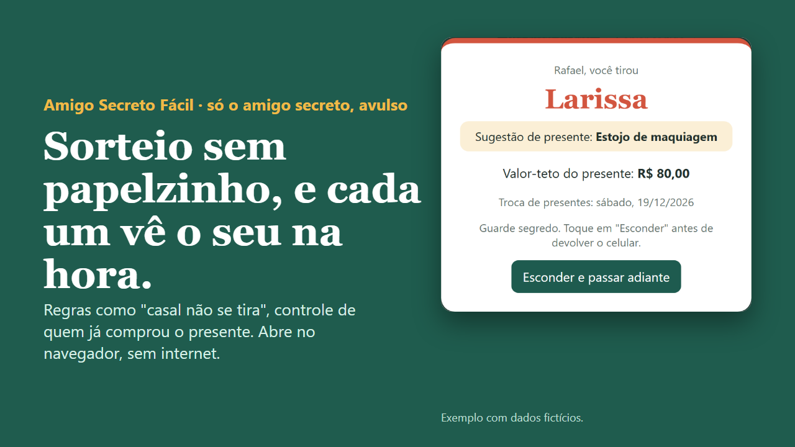
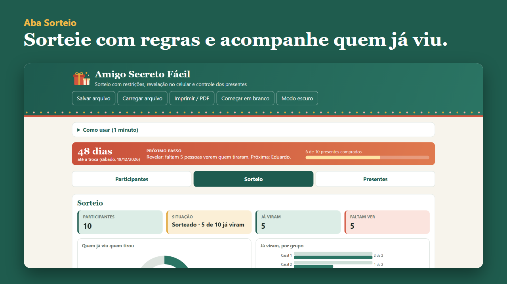
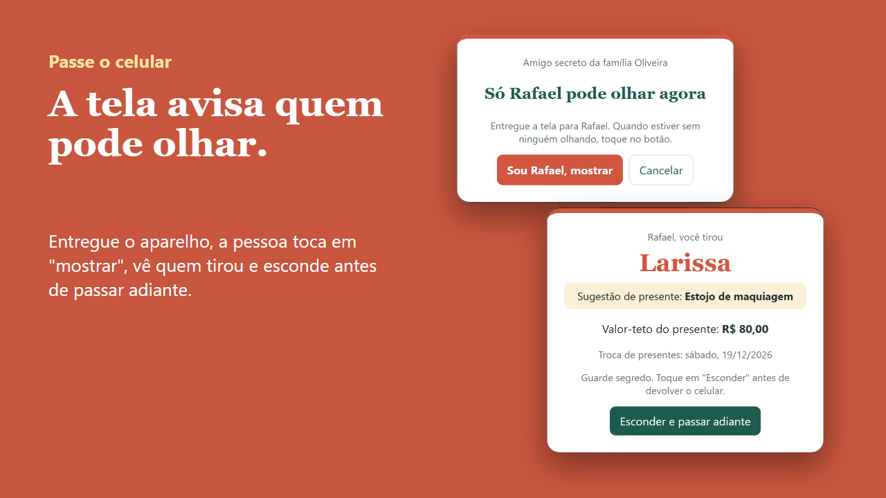
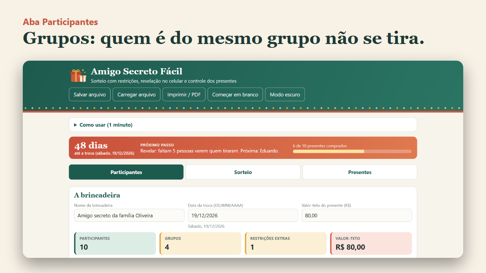
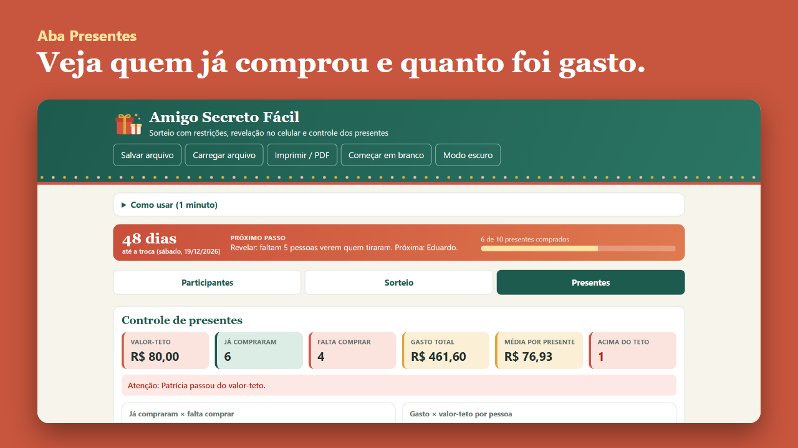

Planeja Home Só o amigo secreto, avulso
Sorteie o amigo secreto sem papelzinho e deixe cada um ver quem tirou, na sua vez.
O Amigo Secreto Fácil é um app de arquivo único para sortear com regras, revelar pelo celular e acompanhar quem já comprou o presente. Abre no navegador, sem internet e sem login.
Quero o Amigo Secreto Fácil por R$ 17,00
Pagamento único. Pix ou cartão. Garantia de 7 dias.

A dor
Papelzinho dobrado que alguém tira a si mesmo, casal que se sorteia, sorteio refeito três vezes e ninguém sabe quem já comprou o presente.
O que é
Um app com três abas: Participantes, Sorteio e Presentes. Você recebe o app em branco, um app de exemplo já preenchido (dados fictícios) e um guia em PDF ilustrado.

O que vem
- App em branco, pronto para os seus dados
- App de exemplo preenchido (dados fictícios)
- Guia em PDF ilustrado, passo a passo
- Participantes com grupo (quem é do mesmo grupo não se tira) e sugestão de presente
- Restrições extras entre pares, valor-teto em R$ e data da troca
- Se não houver sorteio possível, o app avisa
- Revelação pelo modo passe o celular, ou por código por pessoa
- Controle de quem já comprou e do gasto de cada um, sem mostrar quem tirou quem
- Salvar e carregar backup; impressão em A4 sem os pares



Para quem é
Quem organiza o amigo secreto da família, do trabalho ou da turma e quer regras simples e controle dos presentes.
Quem quer um site com login para os participantes sortearem sozinhos online, ou quem procura também a ceia, o cronograma e os presentes da família: isso está no Kit Natal e Ceia, a versão completa, vendido à parte. Sobre a revelação à distância: o código só disfarça o nome para ninguém ler por acidente, e quem recebe precisa receber também o arquivo do app. Não é proteção contra quem quiser descobrir. Se o sigilo é essencial, use o modo passe o celular.
Como acessar
Pague por Pix ou cartão na Kiwify. Os arquivos (um .zip com o app em branco e o exemplo, mais o guia em PDF) ficam na área do comprador e chegam no seu e-mail. Extraia o .zip e dê dois cliques no app: ele abre no Chrome, Edge, Safari ou Firefox, no computador, tablet ou celular, sem internet e sem instalar nada. No iPhone e no iPad, o app abre apenas para consulta. Os dados ficam no navegador do aparelho; use "Salvar arquivo" para ter uma cópia.
Garantia de 7 dias
Se não for o que você esperava, peça o reembolso em até 7 dias da compra, pela Kiwify ou pelo e-mail contatoplanejahome@gmail.com.
Versão completa
Precisa de mais que o sorteio? O Kit Natal e Ceia reúne ceia, cronograma e presentes da família, além do amigo secreto.
Perguntas frequentes
Preciso de internet ou de conta?
Não. O app abre no navegador, offline, sem login e sem instalar nada.
O que vem na compra?
O app em branco, o app de exemplo preenchido e um guia em PDF ilustrado.
O sorteio é sigiloso?
No modo passe o celular, a tela mostra o nome só para quem vai olhar e o esconde antes de passar adiante. Na revelação à distância, quem recebe precisa receber o arquivo do app e o código; o código apenas evita leitura por acidente e não protege contra quem quiser descobrir.
Dá para evitar que casais se tirem?
Sim. Você cria grupos e define restrições extras; se não existir sorteio possível, o app avisa.
Dá para controlar os presentes?
Sim: marque quem já comprou e digite o gasto de cada um. O app mostra o total, a média e quem passou do teto.
Qual a diferença para o Kit Natal e Ceia?
Este é só o amigo secreto, avulso. O Kit Natal e Ceia é a versão completa, com ceia, cronograma e presentes da família.
Meus dados ficam salvos?
Ficam no navegador do aparelho. Use "Salvar arquivo" para guardar uma cópia e carregá-la quando precisar.
Posso revender o arquivo?
Não. O uso é pessoal.
Como peço reembolso?
Em até 7 dias da compra, pela Kiwify ou pelo e-mail contatoplanejahome@gmail.com.
Não consegui abrir. E agora?
Extraia o .zip e abra o arquivo .html pelo navegador, não por um editor de texto. Se persistir, escreva para contatoplanejahome@gmail.com.